Inițiative care aduc speranță și schimbare în comunități

Dincolo de lipsuri și dificultăți, credem că fiecare copil poartă în el un potențial care poate fi descoperit, format și încurajat.
DetaliiMai mult decât o tabără — experiențe care formează caractere și lasă urme pentru o viață. VBS-uri și tabere de vacanță pentru copii și adolescenți.
Detalii
O echipă puternică slujește mai bine atunci când rămâne unită, motivată și ancorată în aceeași viziune. Reconectare, încurajare și formare pentru voluntarii implicați în slujire.
Detalii
Credem că adevărata schimbare apare atunci când oamenii sunt sprijiniți, încurajați și implicați activ în dezvoltarea propriei comunități, devenind la rândul lor sprijin pentru ceilalți.
Detalii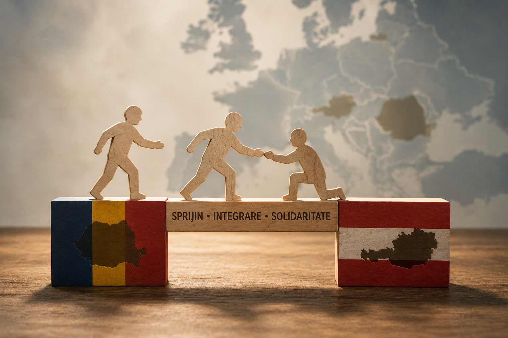
Credem că sprijinul adevărat merge dincolo de granițe, ajutând oamenii să găsească direcție, stabilitate și speranță acolo unde viața i-a așezat.
Detalii
Un loc al imaginației, prieteniei și copilăriei trăite împreună.
Detalii
Pregătim oameni care să ducă mai departe speranța, responsabilitatea și implicarea în propriile lor comunități. Credem că cele mai puternice schimbări se nasc atunci când oamenii formați în interiorul unei comunități aleg să se implice pentru binele celor de lângă ei.
Detalii
Ajutor umanitar și sprijin oferit persoanelor afectate de război, prin implicarea voluntarilor și partenerilor.
Detalii
O punte de solidaritate între comunitățile din Vestul Europei și oamenii aflați în nevoie.
Detalii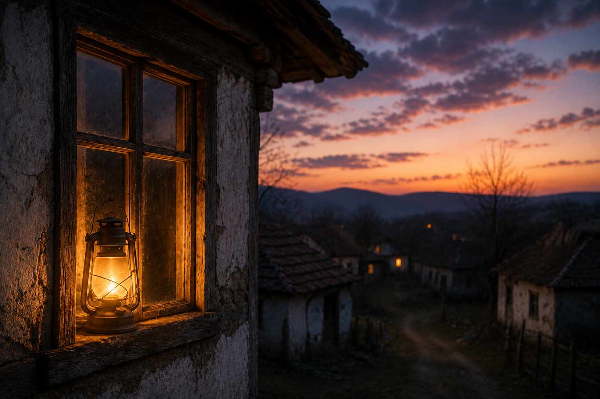
Credem că niciun sat nu este prea mic pentru a fi iubit, iar nicio viață nu este prea neînsemnată pentru a primi sprijin, lumină și speranță.
Detalii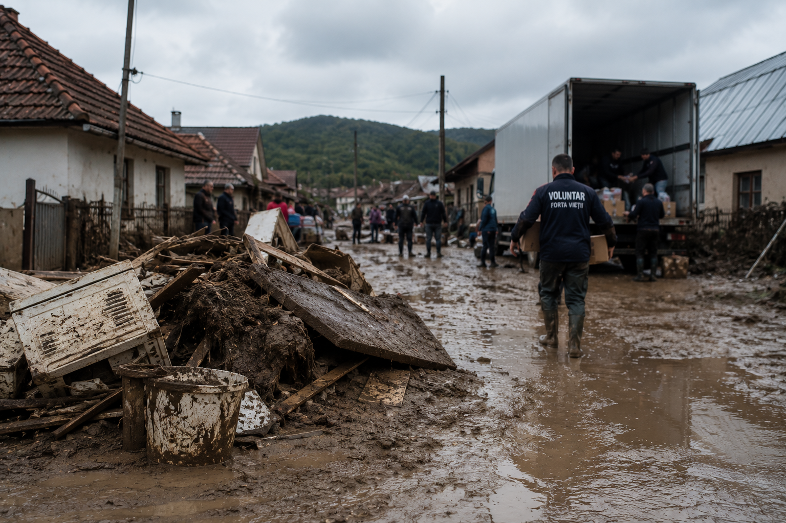
În momentele în care oamenii pierd aproape totul, credem că sprijinul concret, prezența și solidaritatea pot reaprinde speranța. Intervenție de urgență, sprijin umanitar și restaurare pentru familiile afectate de dezastre naturale.
Detalii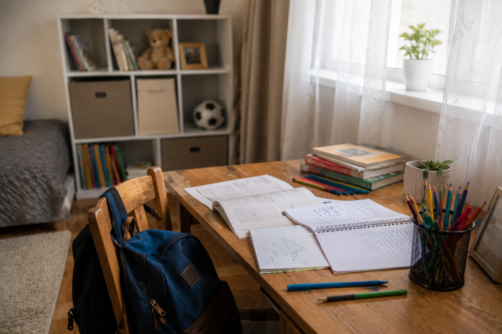
Uneori, o șansă nouă începe printr-un om care decide să fie aproape de un copil care are nevoie de sprijin. Sprijin personalizat pentru copii vulnerabili și legături de suflet între oameni care aleg să ofere speranță.
Detalii
Cadouri și momente speciale oferite copiilor și familiilor din comunități vulnerabile în perioada sărbătorilor. Credem că o cutie mică poate purta în ea dragoste, speranță și amintiri care rămân pentru o viață întreagă.
Detalii
Sprijin alimentar pentru familiile vulnerabile și persoanele aflate în dificultate din comunitățile în care activăm. Uneori, un coș simplu cu alimente poate aduce mai mult decât hrană: poate aduce speranță, demnitate și sentimentul că cineva nu te-a uitat.
Detalii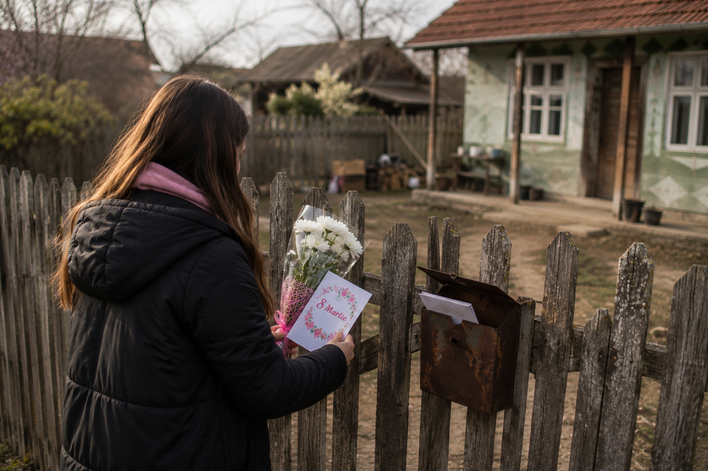
Gesturi de prețuire, încurajare și speranță pentru femeile din comunitățile vulnerabile. Uneori, o floare, un cuvânt bun și faptul că cineva își amintește de tine pot aduce lumină într-un sat uitat și într-o inimă obosită.
Detalii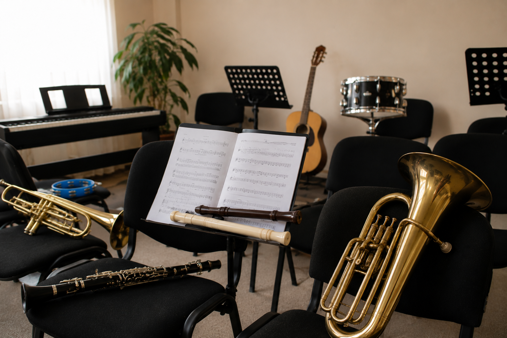
Credem că atunci când copiii și tinerii învață să cânte împreună, învață în același timp să trăiască, să colaboreze și să construiască împreună. Muzica de echipă ca instrument de formare, apartenență și dezvoltare personală.
Detalii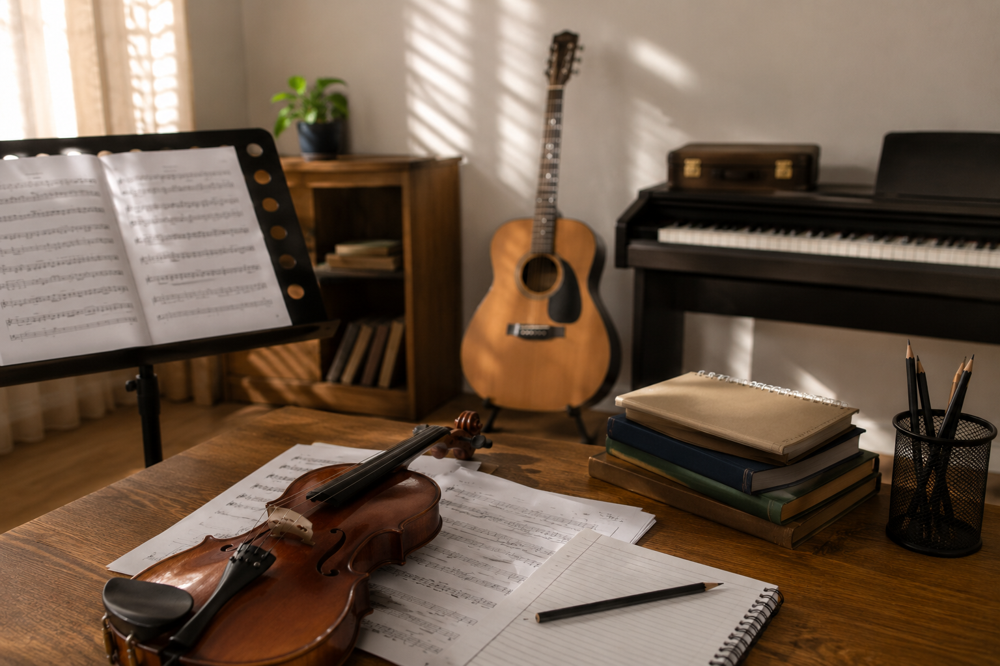
Program de susținere și dezvoltare muzicală pentru copii și tineri. Un copil care învață disciplina muzicii astăzi poate scrie mâine notele propriului destin.
Detalii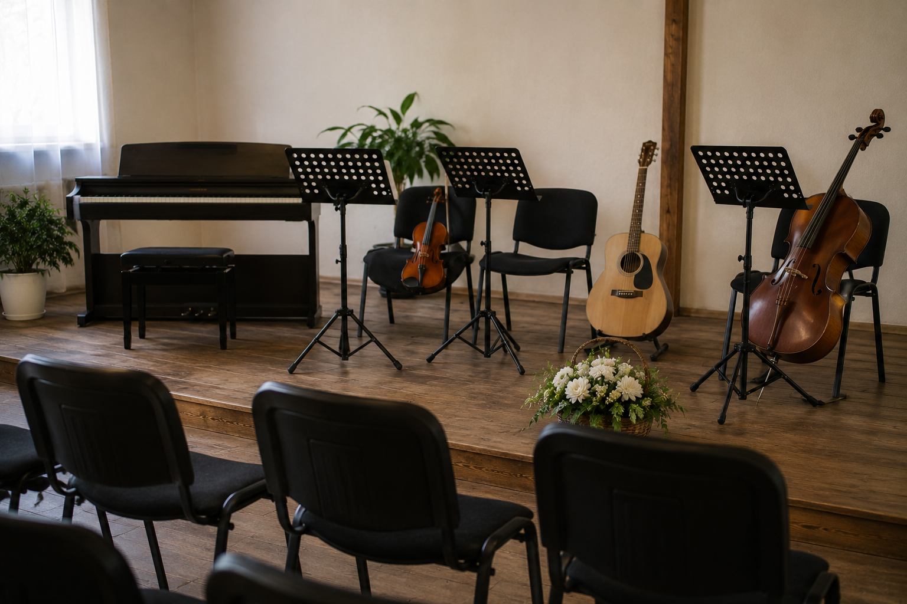
Credem că muzica poate deveni mai mult decât un act artistic — poate deveni o voce a speranței, un instrument de formare și o lumină pentru comunitate.
Detalii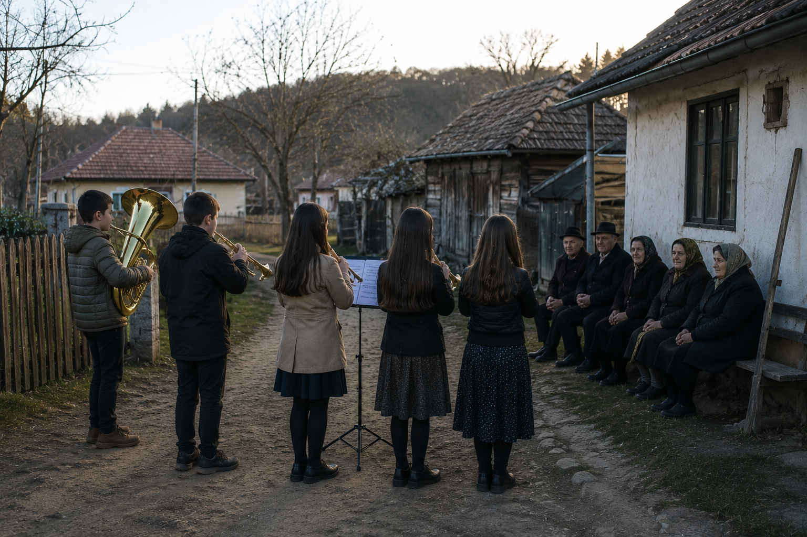
Prin muzică și apropiere umană dorim să aducem încurajare oamenilor aflați în singurătate sau dificultate. Uneori, o cântare și o vizită pot aduce lumină într-o casă uitată de lume.
Detalii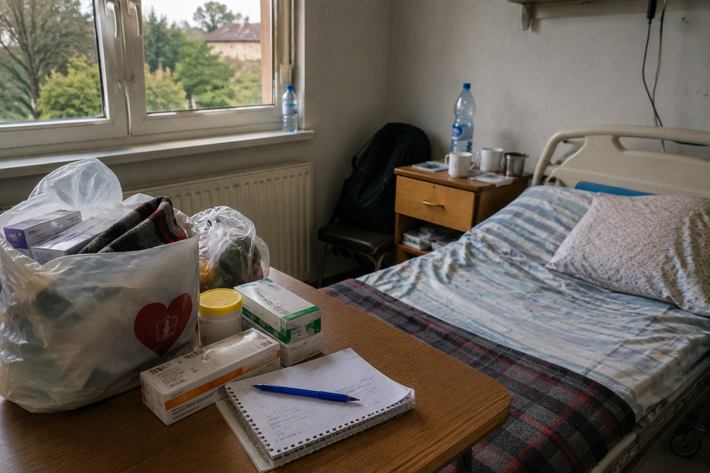
Sprijin medical și umanitar pentru persoane aflate în situații critice. Uneori, cea mai mare formă de ajutor este să fii prezent atunci când cineva trece prin cea mai grea luptă a vieții.
Detalii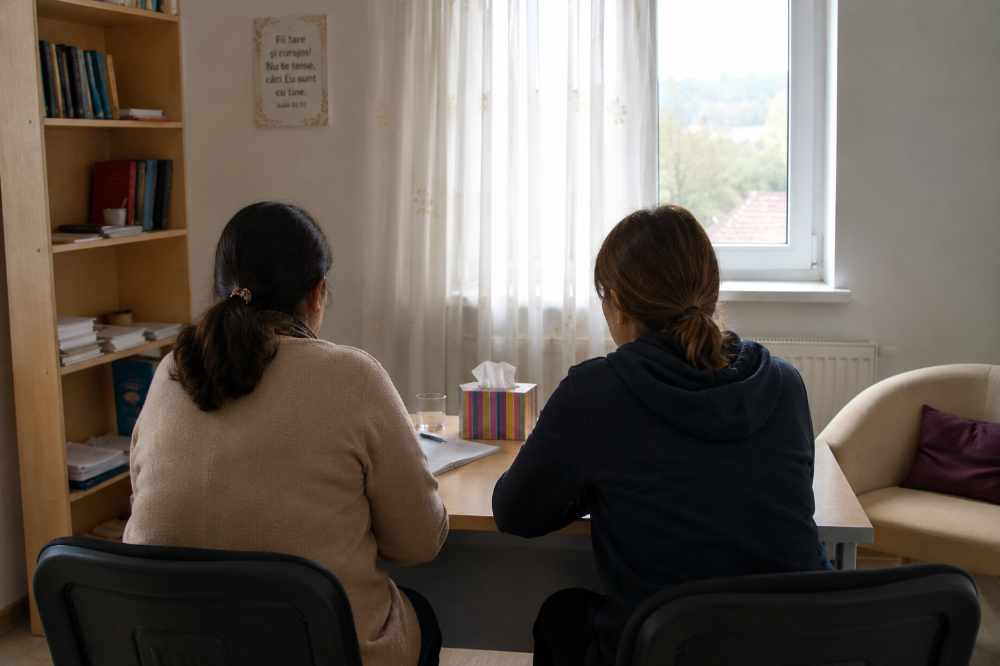
Sprijin emoțional și apropiere pentru persoane și familii care trec prin perioade dificile ale vieții. Unele răni nu se văd la exterior, dar au nevoie de oameni care să asculte, să înțeleagă și să aducă speranță.
Detalii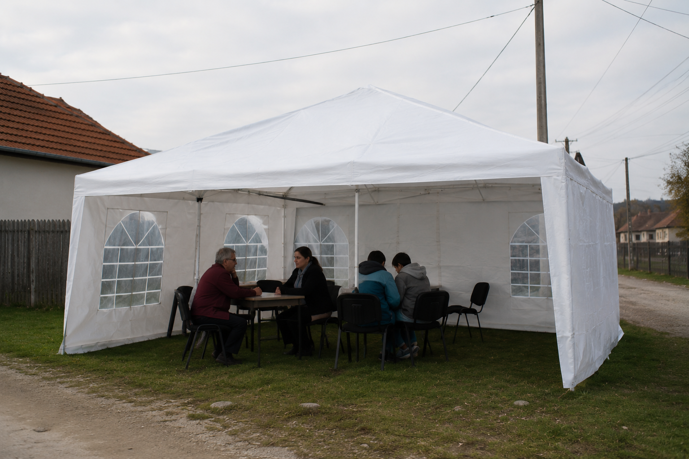
Spațiu mobil de relaționare, dialog și apropiere între oameni. Uneori, oamenii au nevoie doar de un loc unde să fie ascultați, primiți și încurajați.
Detalii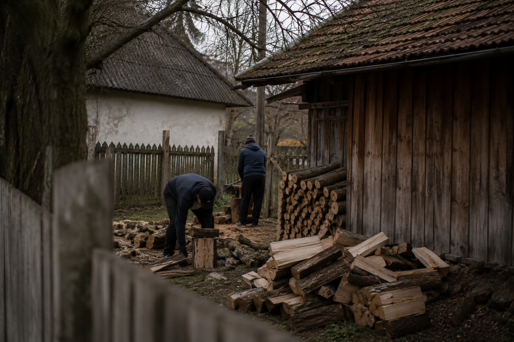
Credem că grija față de oameni se vede cel mai bine prin fapte concrete, prin muncă, implicare și prezență alături de cei aflați în nevoie.
Detalii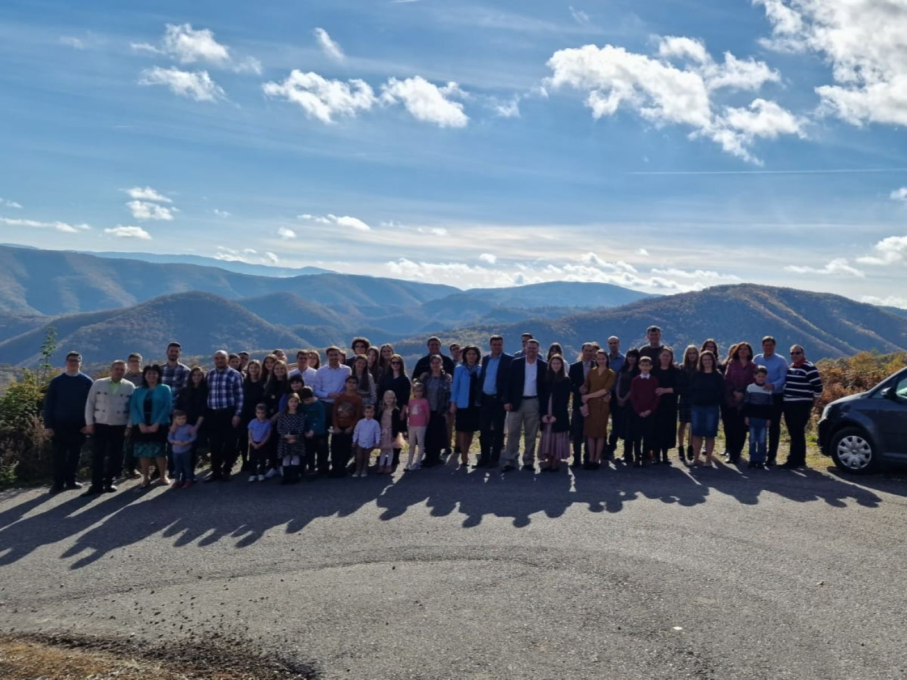
Credem că atunci când comunitățile aleg să lucreze împreună, resursele se multiplică, oamenii se întăresc reciproc, iar inițiativele capătă continuitate. Rețea de sprijin, colaborare și dezvoltare comunitară.
Detalii
Uneori, o consultație, un zâmbet și o mână întinsă pot reda unui om speranța.
Clinici medicale mobile, prevenție și sprijin pentru comunități vulnerabile.

Astăzi ne-am bucurat să oferim pachete de Crăciun copiilor din cele trei localități din Oltenia în care Asociația Forța Vieții este implicată constant: Stoina, Fărcaș și Moflești.
Detalii
Anul acesta ne-am bucurat de bunăvoința gazdelor de la Cabana Rustic din Sâncel, care ne-au pus la dispoziție un spațiu primitor pentru întâlnirea cu copiii.
Detalii
Ne-am bucurat ca și anul acesta să organizăm o întâlnire specială pentru copii, în cadrul proiectului „Bucurie în cutie”, în parteneriat cu Biserica Creștină Baptistă din Ghelari.
Detalii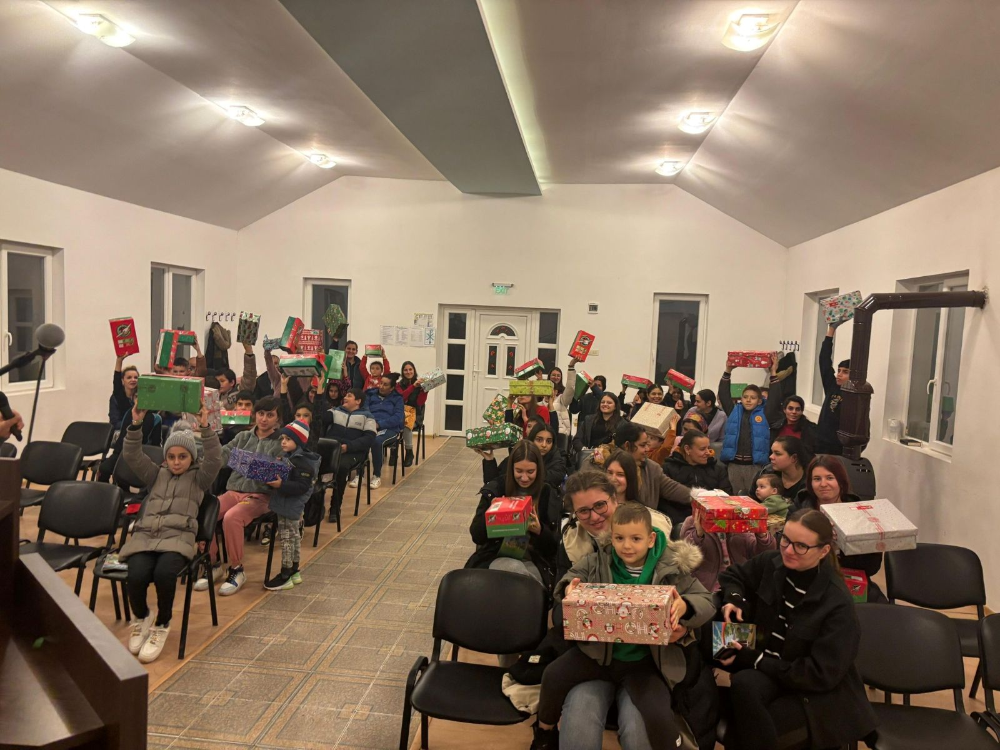
Eveniment special cu tema „Bucuria Întrupării”, organizat în parteneriat cu Biserica Baptistă Moflești, Dolj.
Detalii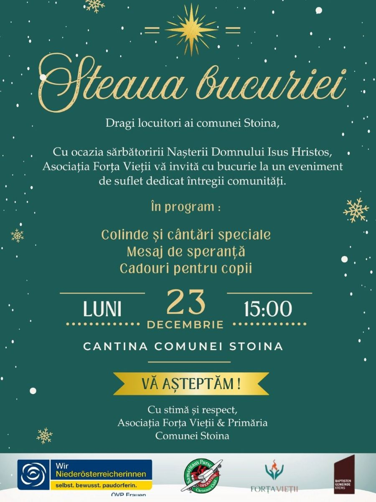
Prin proiectul „Steaua bucuriei”, 120 de copii din Stoina s-au bucurat de cadourile primite.
Detalii
Prin proiectul „Darul cerului”, 300 de copii din Fărcaș s-au bucurat de cadourile primite.
Detalii
Prin proiectul „Zâmbet în Prag” ne propunem să aducem bucurie și siguranță în viețile celor aflați în dificultate, oferindu-le un cămin primitor.
Detalii
Un proiect de real folos pentru comunitățile dependente de lemn ca sursă de încălzire, aducând beneficii economice, sociale și de siguranță.
Detalii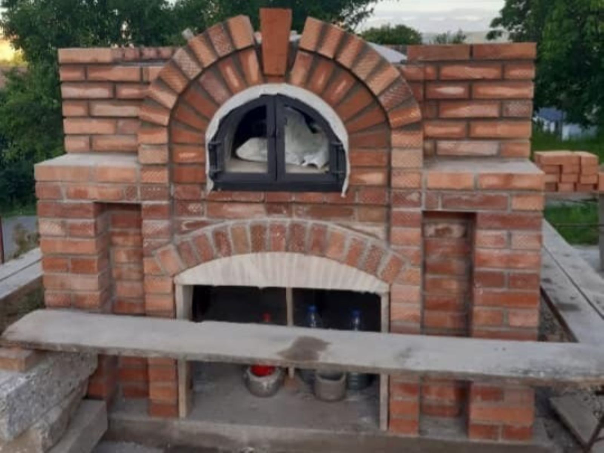
Un cuptor poate avea multiple beneficii pentru o comunitate, devenind loc de întâlnire, sprijin, formare practică și socializare.
Detalii
Copyright © 2024 Asociația Forța Vieții. Toate drepturile rezervate.